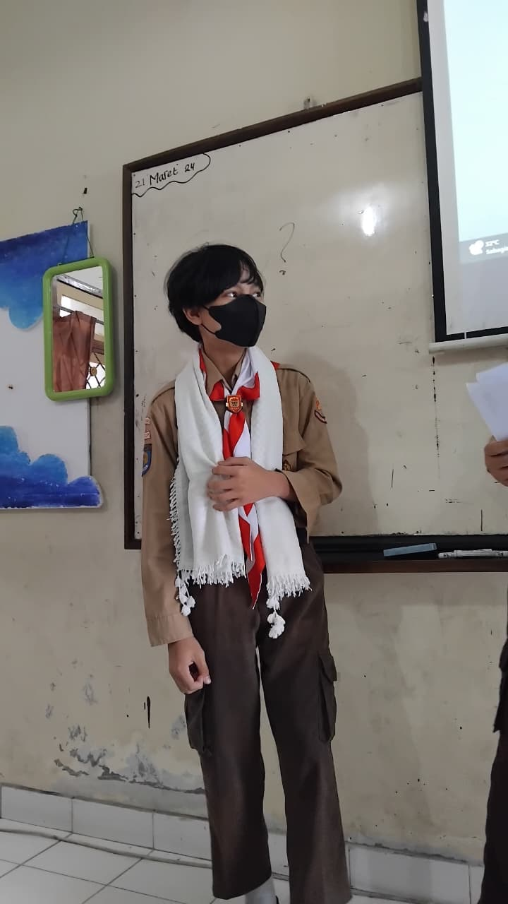
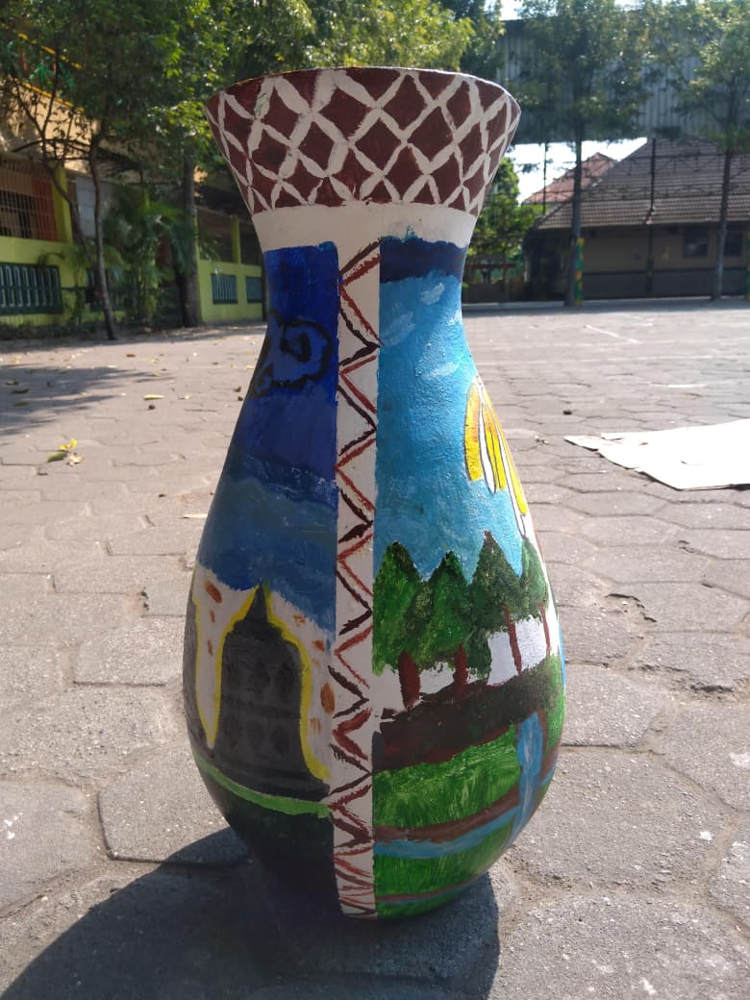
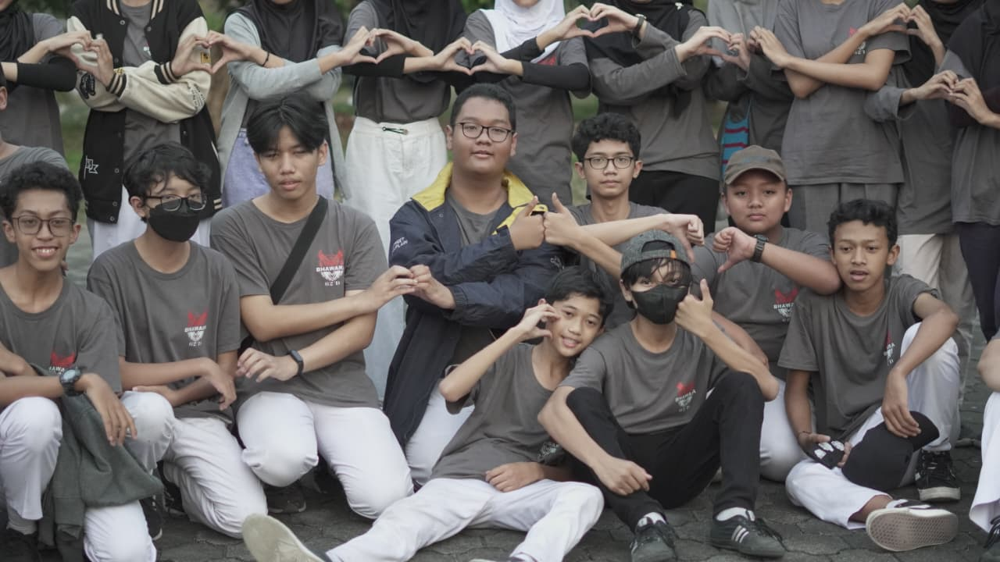
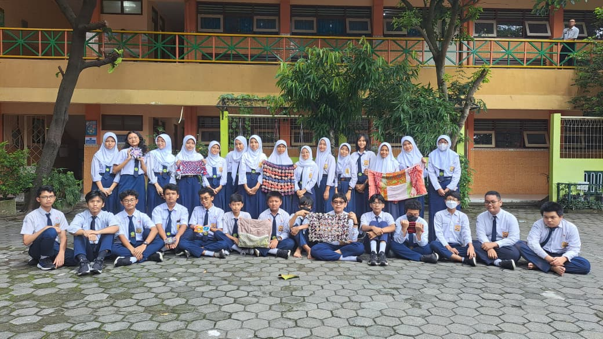
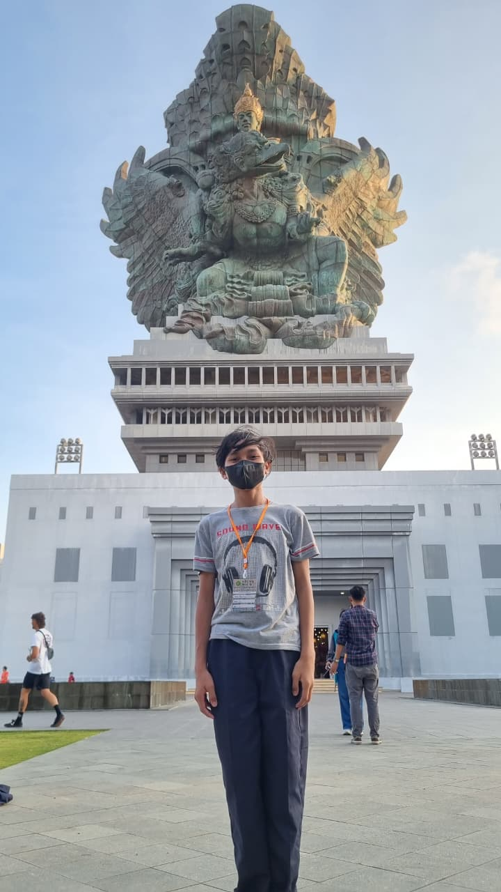

Satu Langkah tak Berjejak
Tampilan Orang Aneh
Memaparkan Materi yang telah di Persiapkan.

Permulaan dari P5 dikelas 2 SMP, kali ini bertemakan melestarikan budaya dan kerajinan asli jawa dalam bentuk lukisan pada guci. misal corak jarik jawa, peninggalan struktur, kaligrafi aksara. sehingga, siswa dapat berkreasi sekreatif mungkin dengan melestarikan budaya jawa.
Tombol Hijau
Kemudian kita berlayar ke bagian dua atas program P5 ini. 19 oktober 2023, tepat dimana siswa diberi kesempatan untuk berkelana. P5 kali ini memmperkenankan siswa untuk mendapatkakn pelajaran berupa rekreasi sejarah pada tempat-tempat seperti pabrik Bakpia ,Colomadu, dan pada penghujun hari, ditutup dengan penampilan Ramayana di Paambanan. kesempatan kali ini, siswa diminta membuat satu laporan atas seluruh pengamatannya pada hari itu
Selengkapnya
Tibalah kita pada pemberentian akhir dari P5 kelas 2. sebagai yang terakhir, P5 ini bertujuan untuk membimbing siswa supaya dapat memanfaatkan barang sisa untuk mengolahnya kembali menjadi barang yang bernilai, kebetulan yan kelas kami dapatkan sisa kain perca, yang kemmuian disulap menjadi suatu barang yang lebih berguna semisal alas gelas, keset lantai dan sebagainya.
Tombol MerahVideo Unggulan
Video yang ditampilkan di samping bukanlah video asli yang menginspirasi saya pada waktu dulu, karena sumber aslinya sudah tidak tersedia. Namun, video ini dipilih karena memiliki kemiripan materi dengan video yang pernah saya tonton sebelumnya.Pada semester genap kelas dua SMP, setiap siswa tentu akan menerima tugas akhir. Sebagai seorang siswa yang berupaya taat beragama, saya memilih tema "Sejarah Masa Keemasan Islam" untuk tugas akhir pelajaran Pendidikan Agama Islam. Mengapa demikian? Saat itu, pengetahuan saya tentang sejarah agama Islam masih sangat minim. Saya berpikir, jika mempelajari materi ini dengan sungguh-sungguh, mungkin saya akan bisa menumbuhkan rasa ketertarikan yang lebih dalam terhadap sejarah Islam.Sesuai dugaan saya, pikiran itu pun menjadi kenyataan. Hingga saat ini, saya menggemari sejarah perjalanan agama islam.

Tampilan Orang Aneh
Memaparkan Materi yang telah di Persiapkan.

Seorang siswa Penuh Tipu Daya.
Berakhir Bahagia dipulau Dewata.
Pada suatu ketika, masalah silih berdatangan,menghujanimu tak berhenti, dan dirimu mulai bertanya -tanya, "kapan cobaan ini akan berhenti Ya Allah, hamba telah lelah menjalani ini semua" Namun kamu menyadari bahwasannya, setiap masalah yang hadir bukanlah cara semesta menjatuhkanmu, melainkan proses menempa agar kamu menjadi pribadi yang lebih tangguh. Di balik lelah yang terasa, selalu ada hikmah yang tersimpan rapi menanti untuk dipetik pada waktu yang paling tepat. Percayalah, tidak ada badai yang datang tanpa membawa kesuburan bagi jiwa yang bersedia untuk bertahan. "Allah tidak membebani seseorang melainkan sesuai dengan kesanggupannya".

Ut ac odio scelerisque ante ornare commodo. Sed faucibus dui libero, in tincidunt purus pretium quis. Fusce posuere egestas enim eu viverra.

Ut ac odio scelerisque ante ornare commodo. Sed faucibus dui libero, in tincidunt purus pretium quis.
read it
Ut ac odio scelerisque ante ornare commodo. Sed faucibus dui libero, in tincidunt purus pretium quis. Fusce posuere egestas enim eu viverra.

Ut ac odio scelerisque ante ornare commodo. Sed faucibus dui libero, in tincidunt purus pretium quis.
detailsSebagai bagian dari eksplorasi dunia teknologi dan pemrograman, kami mencoba membuat dan menjalankan game sederhana menggunakan Visual Studio Code. Proses ini mengajarkan dasar-dasar logika pemrograman, algoritma, dan bagaimana sebuah kode dapat bertransformasi menjadi interaksi yang menyenangkan.
Pembelajaran ini tidak hanya melatih kemampuan teknis (hard skills), tetapi juga melatih kesabaran, ketelitian, dan kemampuan pemecahan masalah (problem solving) saat menghadapi error atau bug dalam kode. Teknologi adalah alat, dan kreativitas kita adalah kuncinya.
Lihat KodeVisit Our Atelier
We invite you to visit our atelier for a personal consultation. Discover our collections in an intimate setting and work with our designers to create something truly unique.